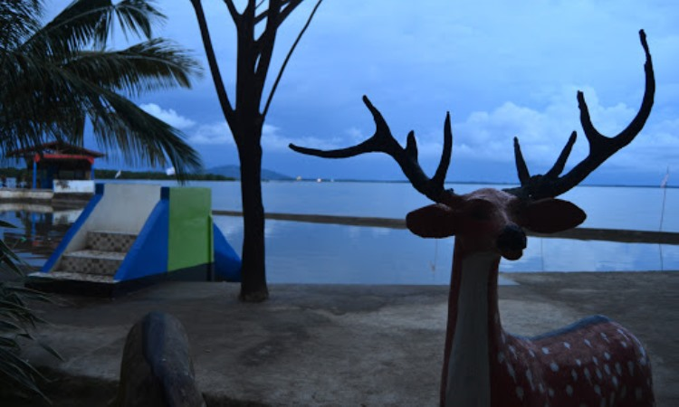
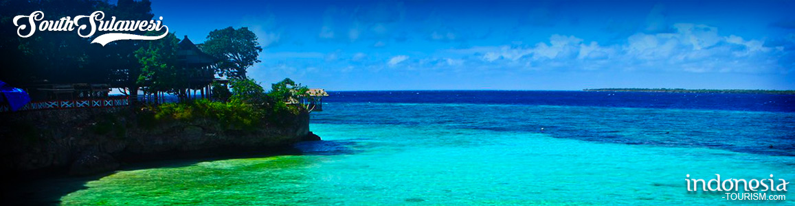
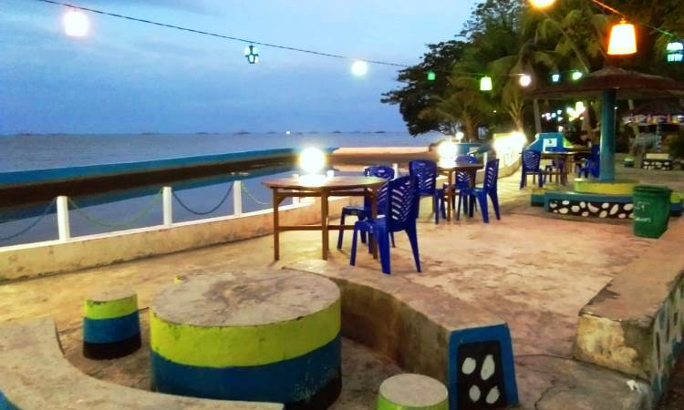

WISATA PALOPO
1.Pesona Keindahan Pantai Labombo di Kota Palopo
Kota Palopo tidak hanya mendapat predikit sebagai kota Idaman. Namun keindahan alamnya juga membuat kota ini semakin bersinar. Apabila Anda mengunjungi Palopo,
ada sebuah objek wisata yang tidak boleh Anda lewatkan. Pantai Labombo merupakan pantai andalan Palopo yang akan menyajikan pemandangan memukau. Untuk mengenal pantai cantik satu ini, mari simak ulasan mengenai pesona Pantai Labombo berikut.
2.Menikmati Keindahan Alam Pantai Labombo yang Memukau
Disamping pengelolaannya yang baik, pantai satu ini memang memiliki pemandangan yang memukau. Anda bisa menikmati pasir putih luas dengan wilayah yang begitu bersih. Kini kehadirannya sangat digemari oleh masyarakat dari Kota Palopo sendiri. Bahkan menjadi langganan untuk menghabiskan liburan bersama keluarga. Karena memang selain pemandangan yang indah, pengunjung juga bisa menjajal beragam wahana yang disediakan.
Anda yang menyukai kegiatan menantang adrenalin, Anda bisa mencoba Flying Fox. Wahana ini tentunya akan membuat Anda bisa menikmati pemandangan dari ketinggian. Tidak hanya Flying Fox, Anda juga bisa mencoba perahu bebek yang akan membuat kegiatan liburan semakin seru. Menaiki perahu bebek dengan keluarga pastinya akan jadi pengalaman yang tidak terlupakan. Selain perahu bebek terdapat juga wahana permainan anak.
Ketika Anda ingin mengadakan acara gathering keluarga maupun outing kantor, Anda juga bisa melakukan outbond di pantai ini. Fasilitasnya yang lengkap akan memberikan kesan dan pengalaman yang tidak terlupakan. Udaranya yang sejuk khas Pantai memang sangat cocok untuk melakukan kegiatan di luar ruangan salah satunya adalah outbond. Dipandu oleh tim yang profesional bisa dipastikan jika outbond akan menumbuhkan kekompakkan untuk peserta.
Inilah mengapa banyak yang menjadikan destinasi wisata untuk anak anak. Karena memang Pantai Labombo sangat ramah anak. Taman Safari juga bisa Anda nikmati ketika mengunjungi pantai satu ini. Tidak hanya memiliki wahana yang menarik, pantai kebanggaan Palopo ini juga menjadi ikon wisata. Letaknya yang strategis juga menunjang nama pantai ini semakin dikenal oleh wisatawan yang datang dari berbagai daerah.
3.Terdapat Bantuan Fasilitas untuk Para Pelaja

Andil dari Pantai Labombo tidak hanya dijadikan sebagai destinasi wisata saja. Karena juga memberikan sumbangsih pada para pelajar dan mahasiswa. Memang pantai satu ini kerap dijadikan tempat untuk mengadakan acara. Dan mereka yang berstatus pelajar akan mendapatkan bantuan fasilitas berupa sound sistem dan lain sebagainya. Untuk itulah membuat pantai ini semakin banyak kunjungan terutama yang ingin mengadakan kegiatan.
Pantai Labombo sangat mendukung kegiatan dan program program pendidikan untuk meningkatkan bakat dan kreatifitas anak muda. Baik yang berada di wilayah Palopo maupun yang dari luar kota Palopo dan ingin melakukan aktivitas pembelajaran di kawasan pantai Labombo. Hal ini tentunya disambut baik oleh para pelajar karena bisa mendapat dukungan untuk melakukan kegiatan di luar kelas tepatnya di Pantai Labombo.
Pantai Labombo sendiri merupakan pantai yang sangat bersih dan nyaman. Sehingga akan sangat cocok jika dijadikan tempat untuk melakukan pembelajaran luar kelas. Tidak perlu memusingkan dana, karena pihak Pantai Labombo sendiri memberikan segala fasilitas yang dibutuhkan dengan Cuma Cuma. Mereka tidak hanya difasilitasi dalam bentuk alat, bahkan dari pihak Max Production memberikan fasilitas tour guide yang membantu mereka mengenal Pantai Labombo lebih dekat.
4.Pantai Labombo Tawarkan Panorama Senja yang Mempesona

Di luar programnya dan bagaimana pengelolaannya, pantai Labomba masihlah pantai yang kaya dengan keindahan alamnya. Airnya yang jernih akan membuat pengunjung ingin sekali merasakan kesegarannya. Ditunjang dengan penataannya yang cantik semakin membuat wajah pantai ini begitu berbeda. Karena memang dulunya Pantai satu ini sangat gersang dan juga kotor. Untuk itulah pengelolaannya yang bagus tidak bisa dilepaskan dari citranya yang sekarang.
Pesonanya yang tidak kalah cantik dengan pantai lainnya adalah pemandangan matahari terbenam. Semburat warna jika yang berpadu dengan suara deburan ombak pastinya menjadi pemandangan yang sangat beharga. Bahkan banyak wisatawan yang sengaja menunggu momen ini untuk melihat panorama yang memukau. Panorama malam hari ini di pantai Labombo juga sangat cantik dan membuat Anda enggan pulang.
Mereka yang datang untuk menikmati senja juga akan menunggu hingga malam hari. Entah untuk bersantai atau untuk menghabiskan waktu. Lampu lampu dibuat berjajar tergantung membuat pemandangannya makin memukau. Belum lagi hadirnya lapak lapak penjual yang akan menambah suasananya semakin semarak. Pengunjung bisa menikmati berbagai kudapan yang bisa dibeli di lapak lapak yang ada.
Para warga sekitar memang akan disediakan lapak khusus yang untuk berjualan yang diperoleh dengan cara menyewa. Lapak yang ada memang tidak banyak dan dibatasi namun tetap saja memberikan pemandangan tersendiri untuk pantai kebanggan Palopo ini. Selain memiliki pemandangan malam yang indah, harga karcis yang ditawarkan juga terjangkau. Setiap pengunjung diharuskan membayar tiket masuk sekitar Rp. 5 ribu saja.
Dengan fasilitas, kenyamanan dan keindahan yang dimiliki tentunya harga tersebut sangatlah terjangkau. Meskipun nantinya pengunjung juga masih harus mengeluarkan budget tambahan jika ingin menikmati setiap wahana yang ada. Palopo yang sudah terkenal dengan banyak wisata, rupanya tidak pernah puas memanjakan wisatawannya. Terbukti dengan hadirnya Pantai Labombo membuat pengunjung dari berbagai daerah memiliki alternatif liburan. Wisata bahari di Sulawesi memang tidak bisa diragukan lagi keindahannya. Namun yang membuat pantai satu ini unik adalah adanya pengelolaan yang memuaskan dengan fasilitas yang juga begitu memadai. Tertarik untuk berkunjungWahana yang disediakan juga dibandrol mulai dari Rp. 10 ribu ke atas. Pengunjung juga bisa menikmati pantai ini dari pagi hingga malam hari.